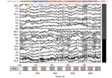

mne.epochs.make_metadata¶
-
mne.epochs.make_metadata(events, event_id, tmin, tmax, sfreq, row_events=None, keep_first=None, keep_last=None)[source]¶ Generate metadata from events for use with
mne.Epochs.This function mimics the epoching process (it constructs time windows around time-locked “events of interest”) and collates information about any other events that occurred within those time windows. The information is returned as a
pandas.DataFramesuitable for use asEpochsmetadata: one row per time-locked event, and columns indicating presence/absence and latency of each ancillary event type.The function will also return a new
eventsarray andevent_iddictionary that correspond to the generated metadata.- Parameters
- events
array, shape (m, 3) The events array. By default, the returned metadata
DataFramewill have as many rows as the events array. To create rows for only a subset of events, pass therow_eventsparameter.- event_id
dict A mapping from event names (keys) to event IDs (values). The event names will be incorporated as columns of the returned metadata
DataFrame.- tmin, tmax
float Start and end of the time interval for metadata generation in seconds, relative to the time-locked event of the respective time window.
Note
If you are planning to attach the generated metadata to
Epochsand intend to include only events that fall inside your epochs time interval, pass the sametminandtmaxvalues here as you use for your epochs.- sfreq
float The sampling frequency of the data from which the events array was extracted.
- row_events
listofstr|str|None Event types around which to create the time windows / for which to create rows in the returned metadata
pandas.DataFrame. If provided, the string(s) must be keys ofevent_id. IfNone(default), rows are created for all event types present inevent_id.- keep_first
str|listofstr|None Specify subsets of hierarchical event descriptors (HEDs) matching events of which the first occurrence within each time window shall be stored in addition to the original events.
Note
There is currently no way to retain all occurrences of a repeated event. The
keep_firstparameter can be used to specify subsets of HEDs, effectively creating a new event type that is the union of all events types described by the matching HED pattern. Only the very first event of this set will be kept.For example, you might have two response events types,
response/leftandresponse/right; and in trials with both responses occurring, you want to keep only the first response. In this case, you can passkeep_first='response'. This will add two new columns to the metadata:response, indicating at what time the event occurred, relative to the time-locked event; andfirst_response, stating which type ('left'or``’right’) of event occurred. To match specific subsets of HEDs describing different sets of events, pass a list of these subsets, e.g. ``keep_first=['response', 'stimulus']. IfNone(default), no event aggregation will take place and no new columns will be created.Note
By default, this function will always retain the first instance of any event in each time window. For example, if a time window contains two
'response'events, the generatedresponsecolumn will automatically refer to the first of the two events. In this specific case, it is therefore not necessary to make use of thekeep_firstparameter – unless you need to differentiate between two types of responses, like in the example above.- keep_last
listofstr|None Same as
keep_first, but for keeping only the last occurrence of matching events. The column indicating the type of an eventmyeventwill be namedlast_myevent.
- events
- Returns
- metadata
pandas.DataFrame Metadata for each row event, with the following columns:
event_name, with strings indicating the name of the time-locked event (“row event”) for that specific time windowone column per event type in
event_id, with the same name; floats indicating the latency of the event in seconds, relative to the time-locked eventif applicable, additional columns named after the
keep_firstandkeep_lastevent types; floats indicating the latency of the event in seconds, relative to the time-locked eventif applicable, additional columns
first_{event_type}andlast_{event_type}forkeep_firstandkeep_lastevent types, respetively; the values will be strings indicating which event types were matched by the provided HED patterns
- events
array, shape (n, 3) The events corresponding to the generated metadata, i.e. one time-locked event per row.
- event_id
dict The event dictionary corresponding to the new events array. This will be identical to the input dictionary unless
row_eventsis supplied, in which case it will only contain the events provided there.
- metadata
Notes
The time window used for metadata generation need not correspond to the time window used to create the
Epochs, to which the metadata will be attached; it may well be much shorter or longer, or not overlap at all, if desired. The can be useful, for example, to include events that ccurred before or after an epoch, e.g. during the inter-trial interval.New in version 0.23.
Examples using mne.epochs.make_metadata¶
